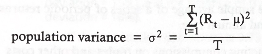

Portfolio Management
Learning Outcome Statements
Portfolio Management: An overview
51.a. Describe the portfolio approach to investing.
- A diversified portfolio produces reduced risk for a given level of expected return, compared to investing in an individual security. Modern portfolio theory concludes that investors that do not take a portfolio perspective bear risk that is not rewarded with greater expected return.
51.b. Describe the steps in the portfolio management process.
- The three steps in the portfolio management process are:
- Planning:
- Determine client needs and circumstances, including the client’s return objectives, risk tolerance, constraints, and preferences. Create, and then periodically review and update, an investment policy statement (IPS) that spells out these needs and circumstances.
- Execution:
- Construct the client portfolio by determining suitable allocations to various asset classes based on the IPS and on expectations about macroeconomic variables such as inflation, interest rates, and GDP growth (top-down analysis). Identify attractively priced securities within an asset class for client portfolios based on valuation estimates from security analysis (bottom-up analysis).
- Feedback:
- monitor and rebalance the portfolio to adjust asset class allocations and securities holdings in response to market performance. Measure and report performance relative to the performance benchmark specified in the IPS.
- Planning:
51.c. Describe types of investors and distinctive characteristic and needs for each.
- Types of investment management clients and their characteristics:
51.d. Describe defined contribution and defined benefit pension plans.
- In a defined contribution plan, the employer contributes a certain sum each period to the employee’s retirement account. The employer makes no promise regarding the future value of the plan assets; thus, the employee assumes all of the investment risk.
- In a defined benefit plan, the employer promises to make periodic payments to the employee after retirement. Because the employee’s future benefit is defined, the employer assumes the investment risk.
51.e. Describe aspects of the asset management industry.
- The asset management industry comprises buy-side firms that manage investments for clients. Asset management firms include both independent managers and divisions of larger financial services companies and may be full-service or specialist firms offering investments in traditional or alternative asset classes.
- Active management attempts to outperform a chosen benchmark through manager skill.
- Passive management attempts to replicate the performance of a chosen benchmark index.
- Most assets under management are actively managed, but the market share for passive management has been increasing.
51.f. Describe mutual funds and compare them with other pooled investment products.
- Mutual funds combine funds from many investors into a single portfolio that is invested in a specific class of securities or to match a specific index. Many varieties exist, including money market funds, bond funds, stock funds, and balanced (hybrid) funds. Open-ended shares can be bought or sold at the net asset value. Closed-ended funds have a fixed number of shares that trade at a price determined by the market.
- Exchange-traded funds are similar to mutual funds, but investors can buy and sell ETF shares in the same way as shares in the same way as shares of stock. Management fees are generally low, though trading ETFs results in brokerage costs.
- Separately managed accounts are portfolios managed for individual investors who have substantial assets. In return for an annual fee based on assets, the investor receives personalized investment advice.
- Hedge funds are available only to accredited investors and are exempt from most reporting requirements. Many different hedge fund strategies exist. A typical annual fee structure is 20% of excess performance plus 2% of assets under management.
- Buyout funds involve taking a company private by buying all available shares, usually funded by issuing debt. The company is then restructured to increase cash flow. Investors typically exit the investment within three to five years.
- Venture capital funds are similar to buyout funds, except that the companies purchased are in the start-up phase. Venture capital funds, like buyout funds, also provide advice and expertise to the start-ups.
Portfolio Risk and Return
52.a. Calculate and interpret major return measures and describe their appropriate uses.
- Holding period return is used to measure an investment’s return over a specific period.
- Arithmetic mean return is the simple average of a series of periodic returns.
- Geometric mean return is a compound annual rate.
- Gross return is total return after deducting commissions on trades and other costs necessary to generate the returns, but before deducting fees for the management and administration of the investment account. Net return is the return after management and administration fees have been deducted.
- Pretax nominal return is the numerical percentage return of an investment without considering the effects of taxes and inflation. After-tax nominal return is the numerical return after the tax liability is deducted, without adjusting for inflation. Real return is the increase in an investor’s purchasing power, roughly equal to nominal return minus inflation. Leveraged return is the gain or loss on an investment as a percentage of an investor’s cash investment.
52.b. Compare the money-weighted and time-weighted rates of return and evaluate the performance of portfolios based on these measures.
- The money-weighted rate of return is the IRR calculated using periodic cash flows into and out of an account and is the discount rate that makes the PV of cash inflows equal to the PV of cash outflows.
- The time-weighted rate of return measures compound growth. It is the rate at which $1 compounds over a specified performance horizon.
- If funds are added to a portfolio just before a periodic of poor performance, the money-weighted return will be lower than the time-weighted return. If funds are added just prior to a period of high returns, the money-weighted return will be higher than the time-weighted return.
- The time-weighted return is the preferred measure of a manager’s ability to select investments. If the manager controls the money flows into and out of an account, the money-weighted return is the more appropriate performance measure.
52.c. Describe characteristics of the major asset classes that investors consider in forming portfolios.
- As predicted by theory, asset classes with the greatest average return have also had the highest risk.
- Some of the major asset classes that investors consider when building a diversified portfolio include small-capitalization stocks, large-capitalization stocks, long-term corporate bonds, long-term Treasury bonds, and Treasury bills.
- In addition to risk and return, when analyzing investments, investors also take into consideration an investment’s liquidity, as well as non-normal characteristics such as skewness and kurtosis.
52.d. Calculate and interpret the mean, variance, and covariance.
- We can calculate the population variance when we know the return Rt for period t, the total number T of periods, and the mean u of the population’s distribution:

- In finance, we typically analyze only a sample of returns, so the sample variance applies instead:

- Covariance measures the extent to which two variables move together over time. Positive covariance means the variables tend to move together. Negative covariance means that the two variables tend to move in opposite directions. Covariance of Zero means there is no linear relationship between the two variables.
- Correlation is a standardized measure of co-movement that is bounded by -1 and +1:

52.e. Explain risk aversion and its implications for portfolio selection.
- A risk-averse investor is one that dislikes risk. Given two investments that have equal expected returns, a risk-averse investor will choose the one with less risk. However, a risk-averse investor will hold risky assets if he feels that the extra return he expects to earn is adequate compensation for the additional risk. Assets in the financial markets are priced according to the preferences of risk-averse investors.
- A risk-seeking (risk-loving) investor actually prefers more risk to less and, given investments with equal expected returns, will choose the more risky investment.
- A risk-neutral investor has no preference regarding risk and would be indifferent between two investments with the same expected return but different standard deviation of returns.
52.f. Calculate and interpret portfolio standard deviation.
- The standard deviation of returns for a portfolio of two risky assets is calculated as follows:

52.h. Describe and interpret the minimum-variance and efficient frontiers of risky assets and the global minimum-variance portfolio.
- For each level of expected portfolio return, the portfolio that has the least risk is known as a minimum-variance portfolio. Taken together, these portfolios form a line called the minimum-variance frontier.
- On a risk versus return graph, the one risky portfolio that is farthest to the left (has the least risk) is known as the global minimum-variance portfolio.
- Those portfolios that have the greatest expected return for each level of risk make up the efficient frontier. The efficient frontier coincides with the top portion of the minimum variance frontier. Risk-averse investors would only choose a portfolio that lies on the efficient frontier.
52.i. Explain the selection of an optimal portfolio, given an investor’s utility (or risk aversion) and the capital allocation line.
- An indifference curve plots combinations of risk and expected return that an investor finds equally acceptable. Indifference curves generally slope upward because risk-averse investors will only take on more risk if they are compensated with greater expected returns. a more risk-averse investor will have steeper indifference curves.
- Flatter indifference curves (less risk aversion) result in an optimal portfolio with higher risk and higher expected return. An investor who is less risk averse will optimally choose a portfolio with more invested in the risky asset portfolio and less invested in the risk-free asset.
53.a. Describe the implications of combining a risk-free asset with a portfolio of risky assets.
- The availability of a risk-free asset allows investors to build portfolios with superior risk-return properties. By combining a risk-free asset with a portfolio of risky assets, the overall risk and return can be adjusted to appeal to investors with various degrees of risk aversion.
53.b. Explain the capital allocation line (CAL) and the capital market line (CML).
- On a graph of return versus risk, the various combinations of a risky asset and the risk-free asset form the capital allocation line (CAL). In the specific case where the risky asset is the market portfolio, the combinations of the risky asset and the risk-free asset form the capital market line (CML).
53.c. Explain systematic and nonsystematic risk, including why an investor should not expect to receive additional return for bearing nonsystematic risk.
- Systematic (market) risk is due to factors, such as GDP growth and interest rate changes, that affect the values of all risky securities. systematic risk cannot be reduced by diversification.
- Unsystematic (firm-specific) risk can be reduced by portfolio diversification.
- Because one of the assumptions underlying the CAPM< is that portfolio diversification to eliminate unsystematic risk is costless, investors cannot increase expected equilibrium portfolio returns by taking on unsystematic risk.
53.d. Explain return generating models (including the market model) and their uses.
- A return generating model is an equation that estimates the expected return of an investment, based on a security’s exposure to one or more macroeconomic, fundamental, or statistical factors.
- The simplest return generating model is the market model, which assumes the return on an asset is related to the return on the market portfolio in the following manner:

53.e. Calculate and interpret beta.
- Beta can be calculated using the following equation:

- where [Cov(Ri, Im)] and correlation(i, m) are the covariance and correlation between the asset and the market, and standard deviation i and standard deviation m are the standard deviation of asset returns and market returns.
- The theoretical average beta of stocks in the market is 1. A beta of zero indicates that a security’s return is uncorrelated with the returns of the market.
53.f. Explain the capital asset pricing model (CAPM), including its assumptions, and the security market line (SML).
- The capital asset pricing model (CAPM) requires several assumptions:
- Investors are risk averse, utility maximizing, and rational.
- Markets are free or frictions like costs and taxes.
- All investors plan using the same time period.
- All investors have the same expectations of security returns.
- Investments are infinitely divisible.
- Prices are unaffected by an investor’s trades.
- The security market line (SML) is a graphical representation of the CAPM that plots expected return versus beta for any security.
53.g. Calculate and interpret the expected return of an asset using the CAPM.
- The CAPM relates expected return to the market factor (beta) using the following formula:

53.h. Describe and demonstrate applications of the CAPM and the SML.
- The CAPM and the SML indicate what a security’s equilibrium required rated of return should be based on the security’s exposure to market risk. An analyst can compare his expected rate of return on a security to the required rate of return indicated by the SML to determine whether the security is overvalued, undervalued, or properly valued.
53.i. Calculate and interpret the Sharpe ratio, Treynor ratio, M squared, and Jensen’s alpha.
- The sharpe ratio measures excess return per unit of total risk and is useful for comparing portfolios on a risk-adjusted basis. The M-squared measure provides the same portfolio rankings as the Sharpe ratio but is stated in percentage terms:

- The Treynor measure measures a portfolio’s excess return per unit of systematic risk. Jensen’s alpha is the difference between a portfolio’s return and the return of a portfolio on the SML that has the same beta:

Basics of portfolio planning and construction
54.a. Describe the reasons for a written investment policy statement (IPS).
- A written investment policy statement, the first step in the portfolio management process, is a plan for achieving investment success. An IPS forces investment discipline and ensures that goals are realistic by requiring investors to articulate their circumstances, objectives, and constraints.
54.b. Describe the major components of an IPS.
- Many IPS include the following sections:
- Introduction-Describes the client.
- Statement of Purpose-The intentions of the IPS
- Statement of Duties and Responsibilities-Of the client, the asset custodian, and the investment managers.
- Procedures-Related to keeping the IPS updated and responding to unforeseen events.
- Investment Objectives-The client’s investments needs, specified in terms of required return and risk tolerance.
- Investment Constraints-Factors that may hinder the ability to meet investment objectives; typically categorized as time horizon, taxes, liquidity, legal and regulatory, and unique needs.
- Investment Guidelines-For example, whether leverage, derivatives, or specific kinds of assets are allowed.
- Evaluation and Review-Related to feedback on investment reuslts.
- Appendices-May specify the portfolio’s strategic asset allocation (policy portfolio) or the portfolio’s rebalancing policy.
54.c. Describe risk and return objectives and how they may be developed for a client.
- Risk objectives are specifications for portfolio risk that are developed to embody a client’s risk tolerance. Risk objectives can be either absolute or relative.
- Return objectives are typically based on an investor’s desire to meet a future financial goal, such as a particular level of income in retirement. Return objectives can be absolute or relative.
- The achievability of an investor’s return expectations may be hindered by the investor’s risk objectives.
54.d. Distinguish between the willingness and the ability (capacity) to take risk in analyzing an investor’s financial risk tolerance.
- Willingness to take financial risk is related to an investor’s psychological factors, such as personality type and level of financial knowledge.
- Ability or capacity to take risk depends on financial factors, such as wealth relative to liabilities, income stability, and time horizon.
- A client’s overall risk tolerance depends on both his ability to take risk and his willingness to take risk. A willingness greater than ability, or vice versa, is typically resolved by choosing the more conservative of the two and counseling the client.
54.e. Describe the investment constraints of liquidity, time horizon, tax concerns, legal and regulatory factors, and unique circumstances and their implications for the choice of portfolio assets.
- Investment constraints include:
- Liquidity-The need to draw cash from the portfolio for anticipated or unexpected future spending needs. high liquidity needs often translate to a high portfolio allocation to bonds or cash.
- Time horizon-Often the period over which assets are accumulated and before withdrawals begin. Risky or illiquid investments may be inappropriate for an investor with a short time horizon.
- Tax considerations-Concerns the tax treatments of the investor’s various accounts, the relative tax treatment of capital gains and income, and the investor’s marginal tax bracket.
- Legal and regulatory-Constraints such as government restrictions on portfolio contents or laws against insider trading.
- Unique circumstances-Restrictions due to investor preferences (religious, ethical, etc.) or other factors not already considered.
54.f. Explain the specification of asset classes in relation to asset allocation.
- An asset class is a group of securities with similar risk and performance characteristics. Examples of major asset classes include equity, fixed income, cash, and real estate. Portfolio managers also use more narrowly defined asset classes, such as large-cap U.S. equities or speculative international bonds, and alternative asset classes, such as commodities or investments in hedge funds.
54.g. Describe the principles of portfolio construction and the role of asset allocation in relation to the IPS.
- Strategic asset allocation is a set of percentage allocations to various asset classes that is designed to meet the investor’s objectives. The strategic asset allocation is developed by combining the objectives and constraints in the IPS with the performance expectations of the various asset classes. The strategic asset allocation provides the basic structure of a portfolio.
- Tactical asset allocation refers to an allocation that deviates from the baseline (strategic) allocation in order to profit from a forecast of shorter-term opportunities in specific asset classes.
Introduction to Risk management
55.a. Define risk management.
- Risk management is the process of identifying and measuring the risks an organization (or portfolio manager or individual) faces, determining an acceptable level of overall risk (establishing risk tolerance), deciding which risks should be taken and which risks should be reduced or avoided, and putting the structure in place to maintain the bundle of risks that is expected to best achieve the goals of the organization.
55.b. Describe features of a risk management framework.
- An overall risk management framework should address the following activities:
- Identifying and measuring existing risks
- Determining the organization’s overall risk tolerance
- Establishing the processes and policies for risk governance.
- Managing and mitigating risks to achieve the optimal bundle of risks.
- Monitoring risk exposures over time.
- communicating across the organization.
- Performing strategic risk analysis.
55.c. Define risk governance and describe elements of effective risk governance.
- Risk governance refers to senior management’s determination of the risk tolerance of the organization, the elements of its optimal risk exposure strategy, and the framework for oversight of the risk management function.
55.d. Explain how risk tolerance affects risk management.
- The risk tolerance for an organization is the overall amount of risk it will take in pursuing its goals and is determined by top management.
55.e. Describe risk budgeting and its role in risk governance.
- Risk budgeting is the process of allocating the total risk the firm will take (risk tolerance) to assets or investments by considering the risk characteristics of each and how they can be combined to best meet the organization’s goal. The budget can be a single risk measure or the sum of various risk factors.
55.f. Identify financial and non-financial sources of risk and describe how they may interact.
- Financial risks are those that arise from exposure to financial markets, including credit risk, liquidity risk, and market risk. Non-financial risks are the risks from the operation of the organization and from sources external to the organization. Individuals face mortality and longevity risk, in addition to financial risks.
- Interactions among risks are frequent and can be especially significant during periods of stress in financial markets.
55.g. Describe methods for measuring and modifying risk exposures and factors to consider in choosing among the methods.
- Risk of assets is measured by standard deviation, beta, or duration. Derivatives risk measures include delta, gamma, vega, and rho. Tail risk is measured with value at risk (VaR) or Conditional VaR. Some risks must be measured subjectively.
- An organization may decide to bear a risk (self-insurance), avoid or take steps to prevent a risk, efficiently manage a risk through diversification, transfer a risk with insurance or a surety bond, or shift a risk (change the distribution of uncertain outcomes) with derivatives.
- Organizations may use multiple methods of risk modification after considering the costs and benefits of the various methods. The end result is a risk profile that matches the organization’s risk tolerance and includes the risks that top management has determined match the organization’s goals.
Fintech in investment management
57.a. Describe “fintech”
- Fintech refers to developments in technology that can be applied to the financial services industry. companies that develop technologies for the finance industry are referred to as fintech companies.
57.b. Describe Big Data, artificial intelligence, and machine learning.
- Big Data refers to the potentially useful information that is generated in the economy, including data from traditional and non-traditional sources. Characteristics of Big Data include its volume, velocity, and variety.
- Artificial intelligence refers to computer systems that can be programmed to simulate human cognition. Neural networks are an example of artificial intelligence.
- Machine learning is programming that gives a computer system the ability to improve its performance of a task over time and is often used to detect patterns in large sets of data.
57.c. Describe fintech applications to investment management.
- Applications of fintech to investment management include text analytics, natural language processing, risk analysis, algorithmic trading, and robo-advisory services.
- Text analytics refers to analyzing unstructured data in text or voice forms. Natural language processing is the use of computers and artificial intelligence to interpret human language. Algorithmic trading refers to computerized securities trading based on predetermined rules.
- Robo-advisors are online platforms that provide automated investment advice based on a customer’s answers to survey questions. The primary advantage of robo-advisors is their low cost to customers. a disadvantage is that the reasoning behind their recommendations might not be apparent.
57.d. Describe financial applications of distributed ledger technology.
- A distributed ledger is a database that is shared on a network, with a consensus mechanism so that each participant has an identical copy of the ledger.
- A cryptocurrency is an electronic medium of exchange that allows network participants in a distributed ledger to engage in real-time transactions without a financial intermediary.
- Potential financial applications of distributed ledger technology include smart contracts, tokenization, and more efficient post-trade clearing and settlement.